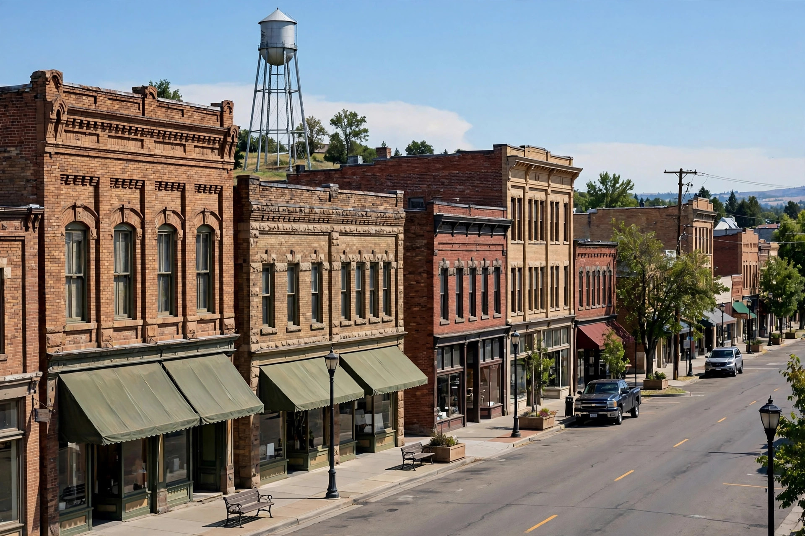
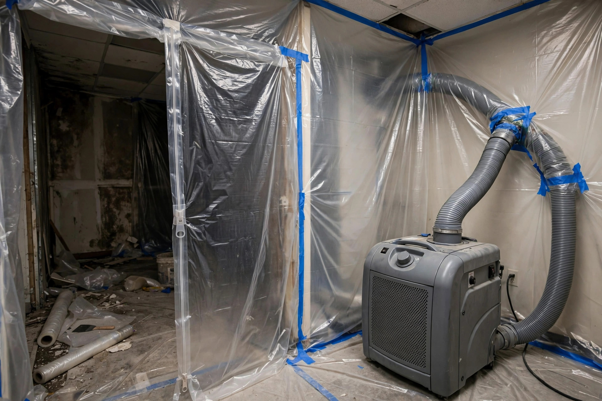

Mold or water damage in Nampa? Get help from a local crew.
From century-old bungalows near downtown to new builds by Lake Lowell, Nampa homes face their own mix of moisture trouble. One call connects you with people who know this city's housing and handle both mold and water damage.

What happens after you dial
Describe what you're seeing
A short call about the smell, stain, or standing water — where it is and when it started.
Get the right visit lined up
You're pointed to the service that fits: inspection for suspected mold, extraction for active water.
See it in person before deciding
Someone looks at the actual problem and talks through options. Nothing is agreed until you've seen the findings.
Nampa questions, straight answers
Does irrigation water around Nampa really affect basements?
In low-lying areas, yes. Canals and laterals keep the shallow water table high through summer, and that moisture can move through foundation walls. Homes near canals or on former farmland see it most.
My Nampa home was built in the 1970s. Should I worry more about mold?
Often, yes. Homes from that era tend to have original plumbing nearing the end of its life and less ventilation than modern builds. Slow leaks inside walls are the most common surprise — an inspection with moisture readings is the straightforward way to check.
How much does mold remediation cost in Nampa?
It depends on how far the growth spread and which materials are affected. An inspection gives you specifics before any work is agreed.
I'm renting in Nampa and found mold. What should I do first?
Tell your landlord in writing and keep dated photos. An independent inspection can document the moisture source if there's a dispute.
Can one visit handle both water damage and mold?
Often, yes. Water damage and mold are usually two stages of the same problem — the water comes first, then the growth. One assessment can map both.
Why it happens in Nampa
Four patterns behind most of the mold and water calls across the city.
Summer canals, damp basements
Irrigation laterals run full from spring through fall across much of Nampa. In low-lying pockets, that water table sits close enough to push moisture through basement walls and crawlspace floors.
Aging pipes in historic blocks
Downtown Nampa's oldest homes still carry plumbing old enough to fail quietly. A pinhole leak inside a wall can feed mold for months before a stain appears.
New subdivisions on old farmland
Fields drain differently than neighborhoods. When farmland becomes rooftops and driveways, stormwater has fewer places to go.
Hard freezes in unheated spaces
January cold snaps hit exposed pipes in garages and crawlspaces. When a split line thaws, the flood often reaches rooms far from the break.
A city of every housing era at once
Nampa grew fast, and its housing shows every era at once. Downtown blocks hold homes from the railroad days with plaster walls and aging pipes, while the edges of town keep converting farmland into subdivisions — each with different water problems.
Irrigation shapes life here more than most newcomers expect. Canals run through neighborhoods all summer, feeding shallow groundwater that pushes damp into basements and crawlspaces. Winter freeze snaps that split outdoor lines add to it.
Eight services for Nampa homes
Each page below covers one problem in depth: what causes it around Nampa, the signs to watch for, and what fixing it usually involves.
Mold Remediation
Established growth removed under containment, with drying so it does not return.
See the process → MoldMold Inspection
Room-by-room check with moisture readings to find growth and trace the damp feeding it.
Learn more → MoldBasement Mold Cleanup
Growth on below-grade walls from seepage or humidity, cleaned and dried at the source.
Learn more → MoldCloset Mold Cleanup
Musty closets on exterior walls, where stored belongings trap condensation.
Learn more → WaterWater Extraction
Standing water pulled out quickly, before it soaks into flooring and wall bases.
Learn more → WaterFlooded Basement Cleanup
Pump-out and dry-out after a basement takes on water, with salvage where possible.
Learn more → WaterCeiling Leak Repair
Stains and sagging from roof or plumbing leaks, repaired once the source is fixed.
Learn more → WaterWater Damaged Drywall Repair
Swollen or crumbling drywall cut out, dried, and rebuilt to match.
Learn more →A homeowner near Lake Lowell notices the carpet feels damp along one basement wall every August — likely irrigation-season groundwater pressing through the foundation. An inspection would confirm it with moisture readings before any work is proposed.
Not sure where to start?
Describe what you're seeing — a smell, a stain, water on the floor — and we'll point you to the right next step.
